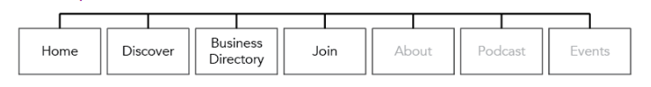
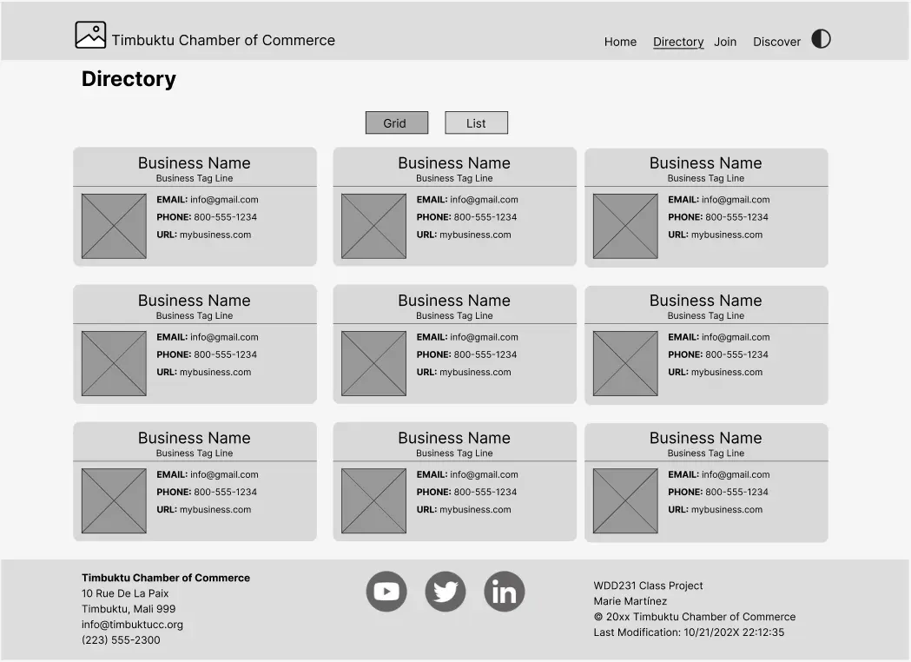
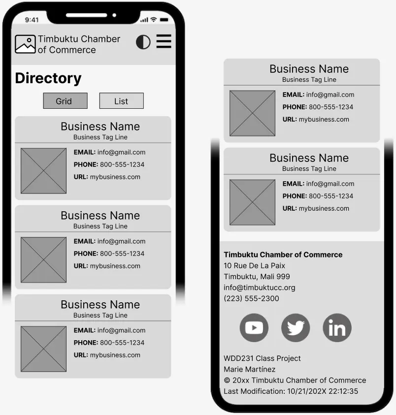

Site Plan
Site Name
Ishtar Station Chamber of Commerce
Site Description: From the Author
I was a little bored with the idea of creating a chamber of commerce website for my local community. I live in Rexburg, ID and I get the feeling that many chamber of commerce websites have been made for this place.
If it comes down to it, I will rename everything and find local images and businesses, I just feel that I can still demonstrate my abilities as well as my creativity by doing it this way. Contrary arguments are welcome and I will graciously accept alternative direction if it means improving my standing in the course.
Thank you,
Matthew Remington
Site Purpose
This website will serve as a resource hub for businesses in Ishtar Station, Venus. The site will provide information on local events, host networking opportunities, create business directories, and encourage local shopping. It aims to promote local economic growth, support local businesses, and foster a sense of community between the businesses.
Target Market
The target market for this website is local business owners and entrepreneurs in Ishtar Station, Venus. The site will also be useful for residents of Ishtar Station who are interested in supporting local businesses and staying informed about local events and opportunities.
Site Goals
- Provide a platform for local businesses to connect and network.
- Promote local events and initiatives.
- Create a comprehensive business directory for Ishtar Station.
- Encourage residents to shop locally and support their community.
User Personas
- Entrepreneur - A new business owner in Ishtar Station who is looking for networking opportunities and resources to help grow their business.
- Corporate Executive - A corporate executive who is interested in investing in local businesses and wants to stay informed about the local business climate.
- Resident - A resident of Ishtar Station who is interested in supporting local businesses and staying informed about local events.
- Colonist - A colonist on Venus who is interested in the local community and wants to be involved in local activities.
Scenarios
- Entrepreneur - The entrepreneur visits the site to find networking events and resources to help grow their business. They use the business directory to connect with other local businesses.
- Corporate Executive - The corporate executive uses the site to stay informed about local business trends and opportunities for investment. They attend local events to meet potential business partners.
- Resident - The resident uses the site to find local events and initiatives to support. They use the business directory to find local businesses to shop at and support.
- Colonist - The colonist uses the site to learn about the local community and get involved in local activities. They attend events and participate in community initiatives to learn about the local culture and way of life.
SEO Plan
- Use relevant keywords in the website content, meta tags, and headings.
- Optimize images with descriptive alt text and file names.
- Create a sitemap and submit it to search engines.
- Build backlinks from reputable local business websites and directories.
- Regularly update the website with fresh content, such as blog posts and event announcements.
Design Brief
The site uses a dark "console" theme by default, inspired by the control panels of a space station, with a lighter theme the visitor can switch to at any time. The choice is saved in the browser and applied before the page paints, so there is no flash when changing pages.
Dark Theme (Default)
Primary Color: #1F1F41 (page background and card surfaces)
Secondary Color: #FFE253 (highlights, glow, and accent text)
Tertiary Color: #AACCA6 (text on panels, borders, and buttons)
Background Color: #000000
Header and Footer: #343434 with white text
Light Theme
Background Color: #F7FFF7 (page #D9DEEC)
Card Surface: #EAF5E8 with #1F1F41 text
Header and Footer: #BFE2BC with #1F1F41 text
Highlight Color: #2B59C3 (replaces yellow for underlines, glow, and edges)
Text Color: #343434
Type and Style
Font: Lato, sans-serif
Navigation and Buttons: Dark panels with uppercase, widely spaced text. Hovering or selecting an item lights its bottom edge with a glowing highlight.
Cards: Event, weather, spotlight, and directory cards share one panel style: a thin green border, a highlighted top edge, and a soft glow.
Page Features
Home
- Hero image with a "Join the Chamber" call to action link and welcome text.
- Current events: the next two upcoming events, loaded from a JSON file.
- Bio-Dome Weather: current temperature, humidity, wind, and a three-day forecast from the OpenWeatherMap API.
- Membership spotlight: three Gold or Silver members chosen at random on each visit.
- On larger screens, events and weather sit side by side with the spotlight across the bottom.
Directory
- Members are loaded from a JSON file and sorted by station sector.
- Grid view shows compact cards with logos. List view is a text-only table-like layout where the name, address, phone, and website columns line up.
- All cards in either view share the same height.
Site Map

Wireframes
These are the original planning wireframes. The final design has evolved from them, notably the dark and light themes and the card layouts described above.
Desktop

Mobile
